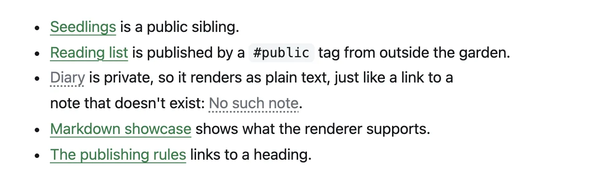

Guides
Publishing notes
Every note is private unless a rule makes it public. The rules are set on the server, and both the plugin and the server check them, so a mistake on one device can't leak a note.
The rules
For each note, kvist goes through these rules in order. The first one that matches decides.
Excluded folders are always private
A note in a folder listed in
exclude_folders(or any of its subfolders) is never published, whatever its tags or properties say. Use this for journals, templates and anything sensitive.Explicitly private notes stay private
A note with
publish: falsein its properties, or with the#privatetag, stays private, even inside a public folder.Public folders, tags and properties publish
A note is published if it is in a folder listed in
always_public_folders, has the#publictag, or haspublish: truein its properties.Everything else stays private
If nothing above matched, the note is not published.
The rules live in kvist.toml on the server server:
[site.publish]
always_public_folders = ["Kvist"]
exclude_folders = ["Templates", "Private", "Journal"]
public_tag = "public" # the tag that publishes a note
private_tag = "private" # the tag that keeps a note private
frontmatter_key = "publish" # the property: publish: true / falseAfter changing them, restart kvist (docker compose restart kvist) and publish again. The plugin fetches the new rules from the server each time it publishes.
Details that matter
- Folders include their subfolders.
"Kvist"coversKvist/Ideas/Note.mdtoo. - Excluded folders match regardless of letter case (
privatealso excludesPrivate). Public folders must match exactly. - Use
"/"inalways_public_foldersto make the whole vault public except the excluded folders and private notes. - The
#publicand#privatetags are hidden on the published page. - The settings note,
_site.md, is never published as a page, even in a public folder.
Three ways to publish a note
| Way | Good for | How |
|---|---|---|
| A public folder | A garden where everything in one place is public | Move the note into Kvist/ (or whatever you listed). |
| A tag | Single notes elsewhere in the vault | Add #public anywhere in the note, or in its tags property. |
| A property | Explicit, per-note control | Add publish: true to the note's properties. |
The command kvist: Toggle publish for current note (also in a note's file menu) sets publish: true or publish: false for you. If a stronger rule wins anyway, for example the note is in an excluded folder, it tells you why.
Links to private notes
Public notes often link to notes that stay private. On the site, those links turn into plain text, looking exactly like a link to a note that doesn't exist. A visitor can't tell whether a private note is behind it.

- Links keep their text (or the alias, for
[[Note|alias]]), but don't link anywhere. - Embeds of private notes (
![[Private note]]) are left out completely. - Backlinks, the graph, search, tags, RSS and the sitemap only ever contain published notes.
The publish report lists every such link and embed, so you can decide whether to publish the target too. To be stricter, make the build fail instead: set unpublished_links = "error" or unpublished_embeds = "error" in [site.publish] (the default is "warn").
Images and attachments
An image, PDF or other file is published only if a published note links to or embeds it, and never if the file itself sits in an excluded folder. You don't need to make attachments public separately.
An image a published note names in its image or cover property counts as embedded, and so do the image, avatar and favicon of the settings note. The excluded-folder rule still applies to them.
Before publishing, kvist removes metadata from JPEG, PNG and WebP images: GPS location, camera details, author and comments. The image itself isn't re-compressed. SVG, GIF, AVIF and PDF files are published as they are, so check those for anything personal.
The allowed file types are png, jpg, jpeg, gif, webp, svg, avif, pdf, mp3, m4a, ogg, wav, mp4 and webm. Files can be up to 50 MiB each. Both can be changed in the configuration.
The publish report
Run kvist: Open publish report, or click the kvist status in the status bar. After a publish it shows:
- how many notes and files are public;
- links and embeds that point to private notes;
- attachments that are used by public notes but sit in excluded folders;
- warnings from the server's build, each linked to the note it's about.
The status bar shows where things stand at a glance:
| Icon | Meaning |
|---|---|
| ○ | Not published yet |
| ◔ / ◑ | Waiting to publish / publishing |
| ● | Published, no warnings |
| ▲ | Published, with warnings in the report |
| ◆ | The server has newer content than this device (see below) |
| ✕ | Publishing failed; the message tells you why |
Publishing automatically
Turn on Publish automatically in the plugin settings, and kvist publishes by itself once you stop editing for a while (30 seconds by default, at least 5).
Use it on one device only
A device that hasn't finished syncing your vault has older notes. If it published automatically, it could replace newer versions on your site. Pick your main computer for automatic publishing, and use Publish now elsewhere.
More than one device
Each device needs its own token. The server keeps track of what was published last. When a device would put an older version of a note back on the site, or remove a note another device just published, kvist stops:
- An automatic publish stops, and the status bar shows ◆.
- Publish now shows the affected notes and asks before going ahead.
Usually the fix is to let your vault finish syncing, then publish again.
Unpublishing and mistakes
To take a note down, make it private (move it, tag it #private or set publish: false) and publish. It disappears from the site, search, feeds and the graph with that build.
- Caches. Pages are cached by browsers and CDNs for up to 60 seconds. With Cloudflare, set up the cache purge so pages vanish from its cache right away.
- The wider internet. Search engines and archives may already have copied a page. kvist can't undo that, so think before publishing something sensitive.
- Undo a bad publish. The server keeps the last 10 versions of your site. Roll back to an earlier one, then fix the vault before publishing again.